# Numerical differentiation
# Ref: Calculus textbook p.110, 115
# Ref: Deep Learning from Scratch p.123
def numerical_diff(f, x):
h = 1e-5 # 0.00001
return (f(x + h) - f(x)) / hLab 2 · Numerical Differentiation, Gradient, Hessian & Gradient Descent
Finite differences, partial derivatives, the gradient/Hessian, and the gradient descent rule in NumPy
Numerical differentiation and gradient descent implemented from scratch.
NoteAbout this edition
English text and comments were edited for publication. Outputs are archived notebook results, not newly executed results. Lab scaffolds and reference illustrations were supplied by the course. Source and reproducibility notes.
TipSummary
This lab builds the calculus tools used throughout the course with nothing but NumPy: a forward-difference derivative, partial derivatives, a numerical gradient and Hessian, a quiver plot of the negative gradient field, and the gradient descent rule with both a fixed and an adaptive (Newton-like) step size. References in the comments point to Deep Learning from Scratch (Saito) and the lecture slides.
1. Numerical Differentiation
1.1 Numerical differentiation
Deep Learning from Scratch, pp. 121–125
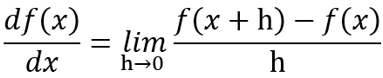
- Numerical differentiation follows directly from the definition of the derivative above.
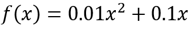
# Ref: Deep Learning from Scratch p.124
def function_1(x):
return 0.01*x**2 + 0.1*x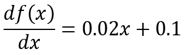
numerical_diff(function_1, 5)0.20000010000353893numerical_diff(function_1, 10)0.30000009996200561.2 Partial derivatives
Deep Learning from Scratch, p. 125
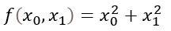
- Unlike
function_1, this function has two variables.
# Ref: Lecture 1 (vectors, matrices, partial/total derivatives, optimization) p.8-9
# Ref: Deep Learning from Scratch p.125
def function_2(x):
return x[0]**2 + x[1]**2
# return np.sum(x**2)
When differentiating with respect to \(x\), every other variable (\(y\)) is treated as a constant.
Conversely, when differentiating with respect to \(y\), the other variable (\(x\)) is treated as a constant.
The partial derivatives of
function_2can be written out by hand as follows.
def function_2_wrt_x0(x):
return 2*x[0]def function_2_wrt_x1(x):
return 2*x[1]- The partial derivatives at \(x_0=3\), \(x_1=4\):
print(function_2_wrt_x0([3,4]))
print(function_2_wrt_x1([3,4]))6
8- However, the approach above is analytical, not numerical.
For \(x_0 = 3, x_1 = 4\), what is \(\frac{\partial f}{\partial x_0}\)?
# Ref: Deep Learning from Scratch p.126
# (x0)^2 + 4^2
def function_2_wrt_x0(x0):
x1 = 4
return x0**2 + x1**2.0numerical_diff(function_2_wrt_x0, 3.0)6.000009999951316For \(x_0 = 3, x_1 = 4\), what is \(\frac{\partial f}{\partial x_1}\)?
# Ref: Deep Learning from Scratch p.127
# 3^2 + (x1)^2
def function_2_wrt_x1(x1):
x0 = 3
return x0**2 + x1**2numerical_diff(function_2_wrt_x1, 4.0)8.00000999952033However, the code above is still not a clean partial derivative either, because we had to rewrite function_2 for each variable.
A way to differentiate with respect to each variable without modifying the function is the gradient, covered below.
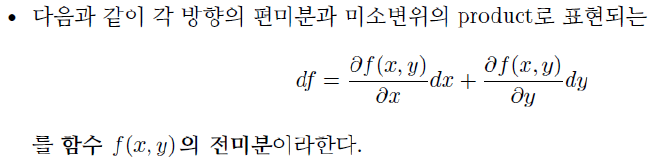
For \(x_0 = 3, x_1 = 4\), the total differential is $ df= dx_0 + dx_1 $
h = 1e-5
df = numerical_diff(function_2_wrt_x0, 3.0)*h + numerical_diff(function_2_wrt_x1, 4.0)*h
print(df)0.00014000019999471647For \(x_0 = 3, x_1 = 4\), what is \(\frac{df}{dx}\)?
numerical_diff(function_2, np.array([3.0, 4.0]))14.000019999471645For \(x_0 = 3, x_1 = 4\), what is \(df\)?
numerical_diff(function_2, np.array([3.0, 4.0]))*h0.000140000199994716472. An Introduction to Optimization
2.1 Gradient & Hessian
Lecture 1 slides (vectors, matrices, partial/total derivatives, optimization), p. 22
import numpy as np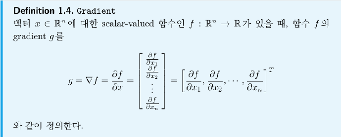
# Ref: Deep Learning from Scratch p.127
def numerical_gradient(f, x):
h = 1e-4 # 0.0001
grad = np.zeros_like(x) # array with the same shape as x
# The partial differential of function f with respect to x_idx
for idx in range(x.size):
tmp_val = x[idx]
##### Fill Your Code #####
# f(x+h)
x[idx] = tmp_val+h
f_x_plus_h = f(x)
# f(x)
x[idx] = tmp_val
fx = f(x)
#########################
grad[idx] = (f_x_plus_h - fx) / h
x[idx] = tmp_val
return grad# Ref: Deep Learning from Scratch p.128
numerical_gradient(function_2, np.array([3.0, 4.0]))numerical_gradient(function_2, np.array([0.0, 2.0]))array([9.99999994e-05, 4.00010000e+00])numerical_gradient(function_2, np.array([3.0, 0.0]))array([6.00010000e+00, 1.00000008e-04])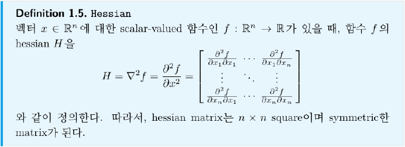
def numerical_hessian(f, x):
h = 1e-5 # 0.0001
hessian = np.zeros_like((x, x)) # |x| x |x| array
x_n = x.copy();
# The partial differential of function f with respect to x_idx
for idx in range(x.size):
x_n[idx] = x[idx] + h
##### Fill Your Code #####
# df(x+h)
df_x_plus_h = numerical_gradient(f, x_n)
# df(x)
df_x = numerical_gradient(f, x)
##########################
hessian[:, idx] = (df_x_plus_h - df_x) / h
x_n = x.copy();
return hessiannumerical_hessian(function_2, np.array([3.0, 4.0]))array([[2.00000017e+00, 3.55271368e-06],
[0.00000000e+00, 2.00000017e+00]])- Gradient visualization: the arrows show the negative gradient, i.e. the direction of steepest descent.
# Ref: Deep Learning from Scratch p.129
import matplotlib.pylab as pltdef numerical_gradient(f, X):
def numerical_gradient_of_scalar_function_wrt_vector_x(f, x):
h = 1e-4 # 0.0001
grad = np.zeros_like(x) # array with the same shape as x
# The partial differential of function f with respect to x_idx
for idx in range(x.size):
tmp_val = x[idx]
# f(x+h)
x[idx] = tmp_val + h
f_x_plus_h = f(x)
# f(x)
x[idx] = tmp_val
fx = f(x)
grad[idx] = (f_x_plus_h - fx) / h
#x[idx] = tmp_val
return grad
if X.ndim == 1:
return numerical_gradient_of_scalar_function_wrt_vector_x(f, X)
else:
grad = np.zeros_like(X)
for idx, x in enumerate(X):
grad[idx] = numerical_gradient_of_scalar_function_wrt_vector_x(f, x)
return gradx0 = np.arange(-2, 2.5, 0.25)
x1 = np.arange(-2, 2.5, 0.25)
X, Y = np.meshgrid(x0, x1)
X = X.flatten()
Y = Y.flatten()
def _function_2(x):
if x.ndim == 1:
return np.sum(x**2)
else:
return np.sum(x**2, axis=1)
grad = numerical_gradient(_function_2, np.array([X, Y]) )
# print(grad)
plt.figure()
plt.quiver(X, Y, -grad[0], -grad[1], angles="xy",color="#666666")#,headwidth=10,scale=40,color="#444444")
plt.xlim([-2, 2])
plt.ylim([-2, 2])
plt.xlabel('x0')
plt.ylabel('x1')
plt.grid()
plt.draw()
plt.show()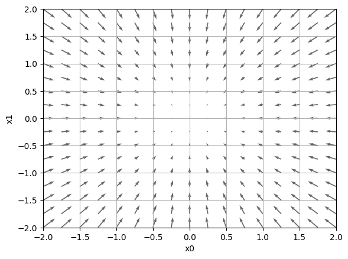
2.2 Gradient Descent Rule
Lecture 1 slides, pp. 18–30
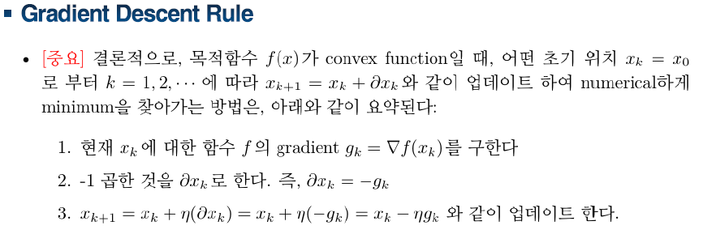
def function_3(x):
return (x[0]-2)**2 + (x[1]-5)**2# Ref: Lecture 1 (optimization) p.21-31
# [Day2]_Gradient Descent and Searching Space Topology.pdf p.35
# Ref: Deep Learning from Scratch p.131
x_k = np.array([-3.0, 10.0]) # initial point
eta = 0.01 # step size, learning rate, momentum
for k in range(1000):
##### Fill Your Code #####
g_k = numerical_gradient(function_3, x_k) # step 1
partial_x_k = -g_k # step 2
x_k = x_k + eta * partial_x_k # step 3
##########################
print(x_k)[1.99994999 4.99995001]def gradient_descent(f, x_0, eta=0.01, max_iter=100):
x_k = x_0
for k in range(max_iter):
g_k = numerical_gradient(f, x_k)
partial_x_k = -g_k
x_k = x_k + eta * partial_x_k # update variable
return x_kx_0 = np.array([-3.0, 4.0])
x_opt = gradient_descent(function_3, x_0=x_0, eta=0.005, max_iter=1000)
print(x_opt)[1.99973415 4.99990683]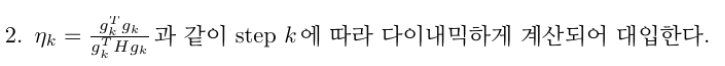
def gradient_descent_dyn(f, x_0, max_iter=100):
x_k = x_0
for k in range(max_iter):
##### Fill Your Code #####
g_k = numerical_gradient(f, x_k)
H_k = numerical_hessian(f, x_k)
partial_x_k = -g_k
eta = (g_k.T @ g_k) / (g_k.T @ H_k @ g_k) # exact line search for a quadratic
##########################
if(np.isnan(eta)):
eta = 0.0
x_k = x_k + eta * partial_x_k # update variable
return x_kx_opt = gradient_descent_dyn(function_3, x_0=x_0, max_iter=5)
print(x_opt)[1.99995 4.99995]- Optimization with the SciPy library (Nelder–Mead, derivative-free), for comparison.
from scipy.optimize import minimize
##### Fill Your Code #####
sol = minimize(function_3, x0=x_0, method='Nelder-Mead')
print(sol.x)
##########################- Update visualization: the blue dots trace the iterates of gradient descent on the contour plot of \(f(x) = x_0^2 + x_1^2\). The first plot uses a fixed step size, the second the adaptive step size \(\eta_k = g^\top g / (g^\top H g)\).
eta = 0.1
max_iter = 20
def _gradient_descent(f, x_0, eta=0.01, max_iter=100):
x = x_0
x_history = []
for k in range(max_iter):
x_history.append( x.copy() )
g = numerical_gradient(f, x)
x = x - eta * g
return x, np.array(x_history)
def function_4(x):
if x.ndim == 1:
return np.sum(x**2)
else:
return np.sum(x**2, axis=1)
x_0 = np.array([-3.0, 4.0])
x, x_history = _gradient_descent(function_4, x_0, eta=eta, max_iter=max_iter)
plt.plot( [-5, 5], [0,0], '--r')
plt.plot( [0,0], [-5, 5], '--r')
plt.plot(x_history[:,0], x_history[:,1], 'bo')
# https://www.geeksforgeeks.org/contour-plot-using-matplotlib-python/
feature_x = np.linspace(-3.5, 3.5, 70)
feature_y = np.linspace(-4.5, 4.5, 70)
# Creating 2-D grid of features
[X, Y] = np.meshgrid(feature_x, feature_y)
Z = X ** 2 + Y ** 2
# plots filled contour plot
plt.contourf(X, Y, Z)
plt.xlim(-3.5, 3.5)
plt.ylim(-4.5, 4.5)
plt.xlabel("X0")
plt.ylabel("X1")
plt.show()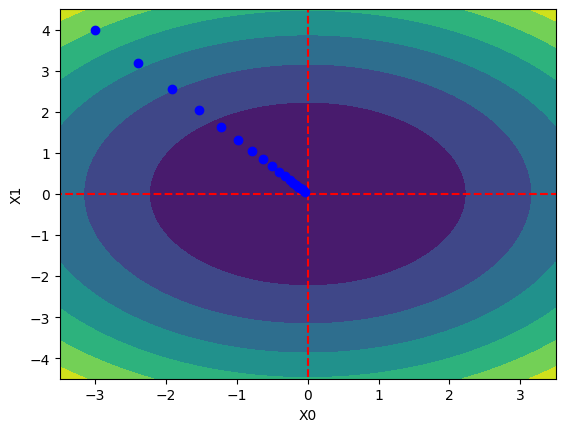
eta = 0.1
max_iter = 20
def _gradient_descent(f, x_0, eta=0.01, max_iter=100):
x = x_0
x_history = []
for k in range(max_iter):
x_history.append( x.copy() )
g = numerical_gradient(f, x)
h = numerical_hessian(f, x)
eta = g.T@g/(g.T@h@g) # adaptive step size
x = x - eta * g
return x, np.array(x_history)
def function_4(x):
if x.ndim == 1:
return np.sum(x**2)
else:
return np.sum(x**2, axis=1)
x_0 = np.array([-9.0, 9.0])
x, x_history = _gradient_descent(function_4, x_0, eta=eta, max_iter=max_iter)
plt.plot( [-10, 10], [0,0], '--r')
plt.plot( [0,0], [-10, 10], '--r')
plt.plot(x_history[:,0], x_history[:,1], 'bo')
# https://www.geeksforgeeks.org/contour-plot-using-matplotlib-python/
feature_x = np.linspace(-10, 10, 100)
feature_y = np.linspace(-10, 10, 100)
# Creating 2-D grid of features
[X, Y] = np.meshgrid(feature_x, feature_y)
Z = X ** 2 + Y ** 2
# plots filled contour plot
plt.contourf(X, Y, Z)
plt.xlim(-10, 10)
plt.ylim(-10, 10)
plt.xlabel("X0")
plt.ylabel("X1")
plt.show()<ipython-input-76-28bb0da7278d>:13: RuntimeWarning: invalid value encountered in double_scalars
eta = g.T@g/(g.T@h@g)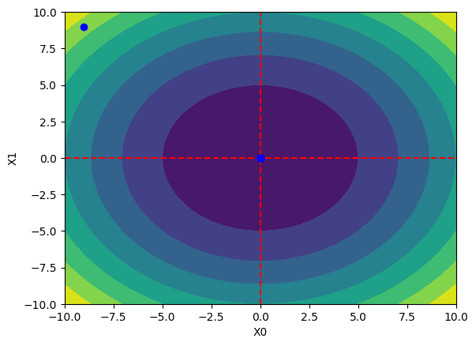